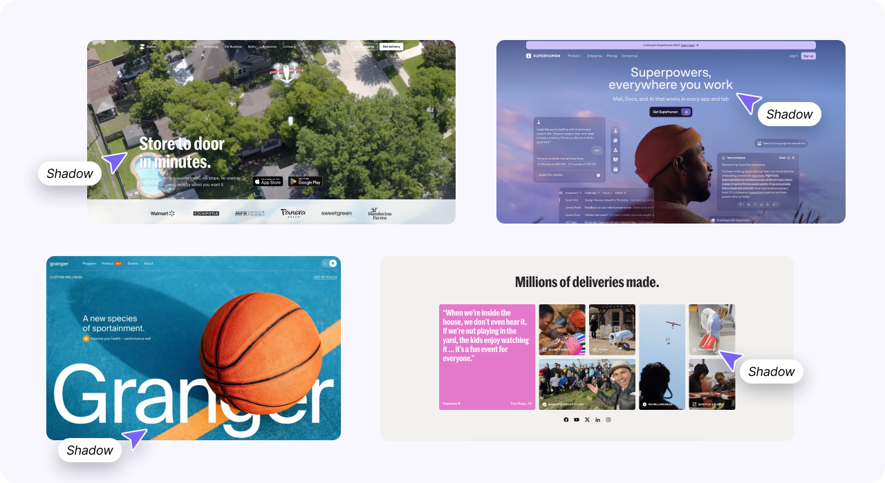
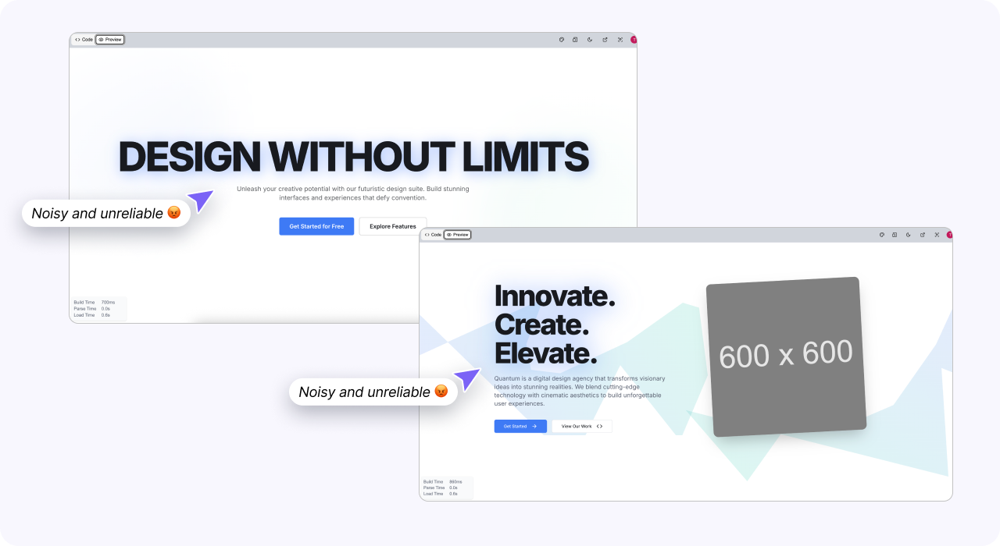
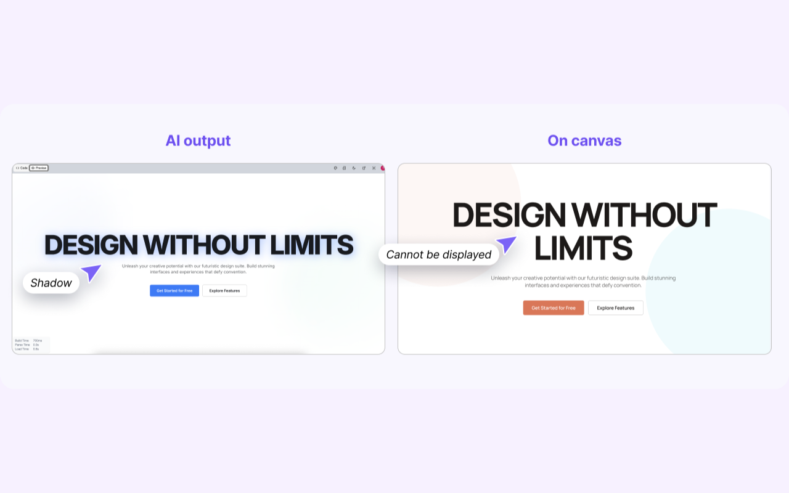

AI could generate text shadow, but could not apply it consistently
AI could generate text shadow, but lacked clear design logic and product support. The result was inconsistent behavior, weak context awareness, and outputs that could not be fully rendered or edited in the canvas.
01
Market Reality
Text shadow is functionally necessary
Text shadow appears in many modern interfaces when readability becomes a problem.
Common use cases include:
- Text on image backgrounds
- Low-contrast surfaces
- Dense layouts with weak visual separation
Text shadow is not only decorative. It improves readability, visual hierarchy, and text-background separation.
This reveals an important insight: if designers repeatedly use text shadow to solve readability problems, AI systems should be able to generate it consistently and correctly.

02
AI Limitation
Can generate, but inconsistently
Testing showed that AI could generate text shadow in the internal code output (DOM), but the behavior was inconsistent.
Common issues included
- Shadow appearing on one screen but missing on similar screens
- Different shadow values used for similar contexts
- Missing or incorrect shadows on low-contrast backgrounds
The root problem
The root problem was not generation capability, but missing decision logic.
AI could generate visual output, but it could not:
- Understand visual context
- Decide when shadow was needed
- Apply consistent rules across screens
This revealed a key gap: AI needed rule-based logic and contextual reasoning, not only pattern generation.

03
Product Gap
Cannot render in canvas
The Visily canvas could not render text shadow, even though AI could generate it in the internal code layer. This created a system gap between AI generation and product rendering.
As a result:
- Text shadow could not be displayed in the canvas
- Users could not edit or control the output
- AI-generated results became unusable in the product
Impact on non-designers
This issue had a strong impact on non-designers, who expected AI outputs to work immediately without technical adjustments.
The root problem
The root problem was system misalignment. AI could generate text shadow, but the canvas architecture did not support rendering it.
This revealed a critical insight: AI capability alone is not enough. The system must connect generation, rendering, and user control to create usable product output.

Why all three layers matter
The problem was not market demand or AI capability.
The market needed text shadow for readability. AI could generate it. But the product could not render or support it.
The real gap was system alignment. Users could generate a feature with AI, but could not see, edit, or use the result.
This created the opportunity to improve both AI logic and product support together.